A Ficha da organização
O primeiro registo a preencher: quem é a entidade, os contactos, a dimensão e o contexto — os dados que a lei manda inscrever na plataforma do CNCS, e o que a plataforma faz com eles.
Começamos a usar a plataforma pelo princípio: a Ficha da organização. É aqui que se escreve quem é a entidade — o nome, os contactos, a dimensão e o contexto em que trabalha. Parece burocracia, mas é a base de tudo o resto, e é também o que a lei manda comunicar ao CNCS.
Porquê
A ficha serve três propósitos. Primeiro, o dever de registo: o artigo trigésimo quinto do decreto-lei manda inscrever na plataforma do CNCS o nome, o número de contribuinte, o endereço e os contactos — incluindo as gamas de endereços IP e os telefones —, o setor e os Estados-Membros onde a entidade presta serviços.
Segundo, manter esses dados certos. O Regulamento exige que estejam permanentemente atualizados, e o decreto-lei dá trinta dias úteis para comunicar qualquer alteração. Terceiro, o contexto da organização — missão, estratégia, o que a influencia por dentro e por fora —, que é o ponto de partida de qualquer sistema de gestão da segurança da informação.
Para que serve
O dever de registo: nome, NIF, endereço e contactos, gamas de endereços IP, setor e Estados-Membros (art. 35.º do DL).
Os dados da autoidentificação na plataforma do CNCS (art. 8.º do Regulamento) — Autoidentificação e qualificação.
Manter tudo permanentemente atualizado (art. 11.º do Regulamento); alterações comunicam-se em 30 dias úteis (art. 35.º do DL).
O contexto da organização: missão, estratégia e as questões internas e externas — base do sistema de gestão.
Antes de abrir o ecrã
Antes de abrir o ecrã, reúna a informação, porque está espalhada. Os dados administrativos, com os serviços administrativos e financeiros. A qualificação, com quem acompanhou a autoidentificação no CNCS. As gamas de endereços IP, com a informática. O número de trabalhadores, com os recursos humanos.
E a missão, a visão, a estratégia e o contexto, com a direção. Não invente: estes textos quase sempre já existem, no plano estratégico ou no plano de atividades. Copie-os de lá.
O que pedir a quem
Informação |
Quem a tem |
|---|---|
Nome, NIF, natureza jurídica, morada |
serviços administrativos e financeiros |
Qualificação dada pelo CNCS, setor e subsetor |
quem acompanhou a autoidentificação; serviço jurídico |
Gamas de endereços IP |
informática (redes) |
Número de trabalhadores |
recursos humanos |
Volume de negócios e balanço |
serviços financeiros |
Missão, visão, estratégia e contexto |
direção — o plano estratégico e o plano de atividades |
O ecrã
Menu: Governar › Organização › Ficha da organização
No menu Governar, Organização, Ficha da organização. A ficha abre em leitura: mostra o que está preenchido, sem caixas de edição. Quem só consulta fica sempre assim; quem tem o papel de operador pode editar.
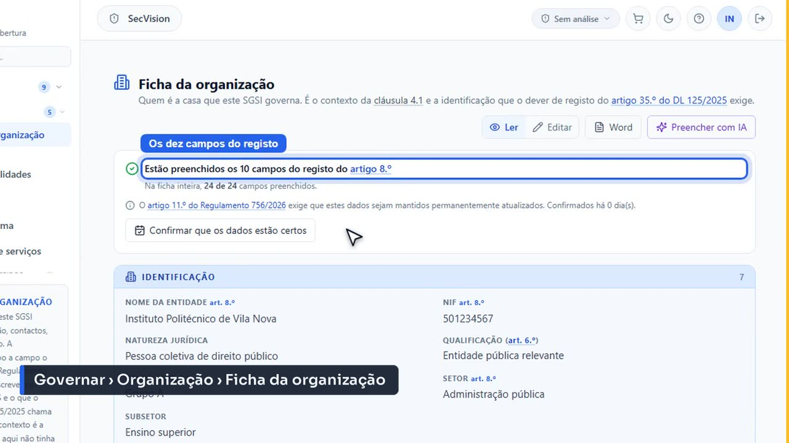
O ecrã em Governar › Organização › Ficha da organização.
O cartão do topo dá dois números, e convém não os confundir. O primeiro conta os dez campos que o artigo oitavo do Regulamento manda inscrever no registo do CNCS: é uma lista fechada, e é o que se comunica à autoridade. O segundo conta a ficha inteira — vinte e três campos —, que é todo o trabalho por fazer.
Por baixo, a data da última confirmação. Aqui diz que ninguém confirma os dados há mais de um ano. O botão Confirmar que os dados estão certos regista essa verificação: é a prova de que a entidade cumpre o dever de os manter atualizados.
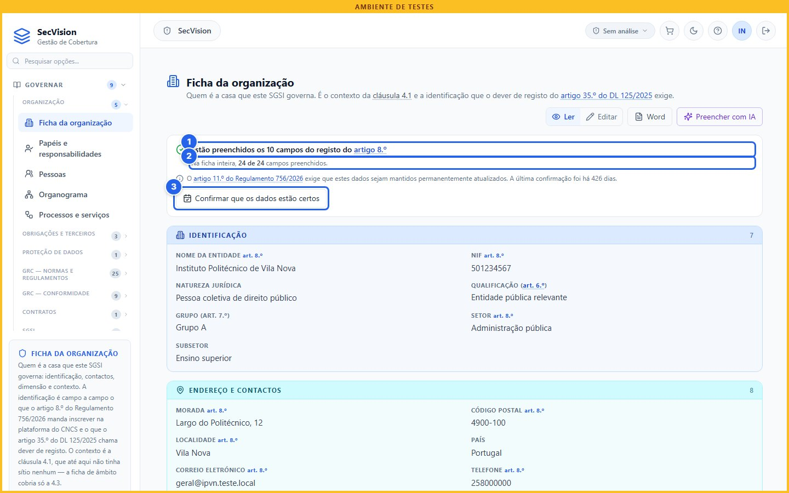
Dois números, e não são o mesmo.
Os dez campos do registo
A ficha inteira
Confirmar que os dados estão certos (art. 11.º do Regulamento)
Passamos a Editar. Os campos do registo levam, ao lado do nome, a marca do art. 8.º do Regulamento, para se saber quais são sem os contar de cabeça.
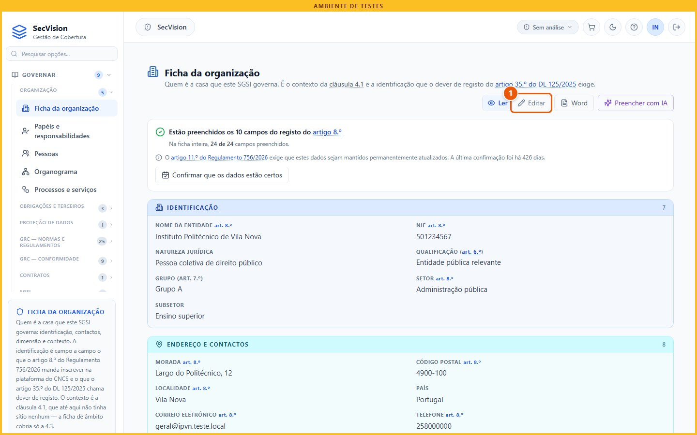
Editar (1 de 2).
Clique em Editar.
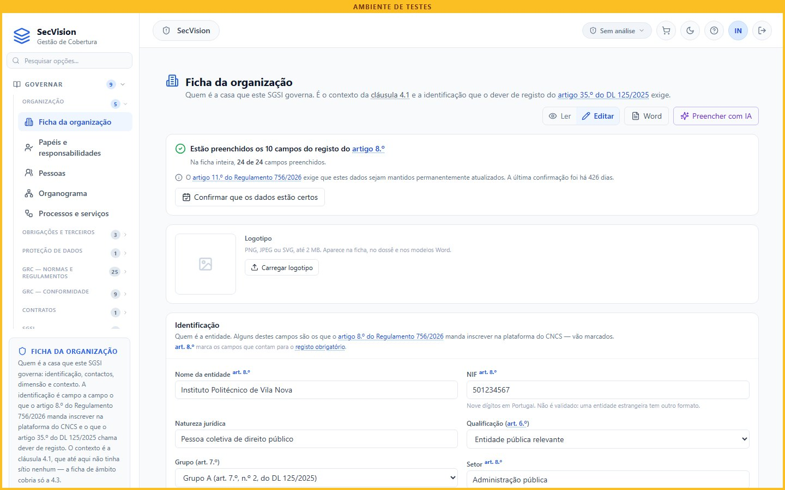
Editar (2 de 2).
Identificação
A identificação: o nome da entidade, exatamente como aparece nos documentos oficiais; o número de identificação fiscal; e a natureza jurídica — aqui, pessoa coletiva de direito público.
O NIF não é validado de propósito: uma entidade estrangeira tem outro formato. Confira-o duas vezes — é por ele que o CNCS identifica a entidade.
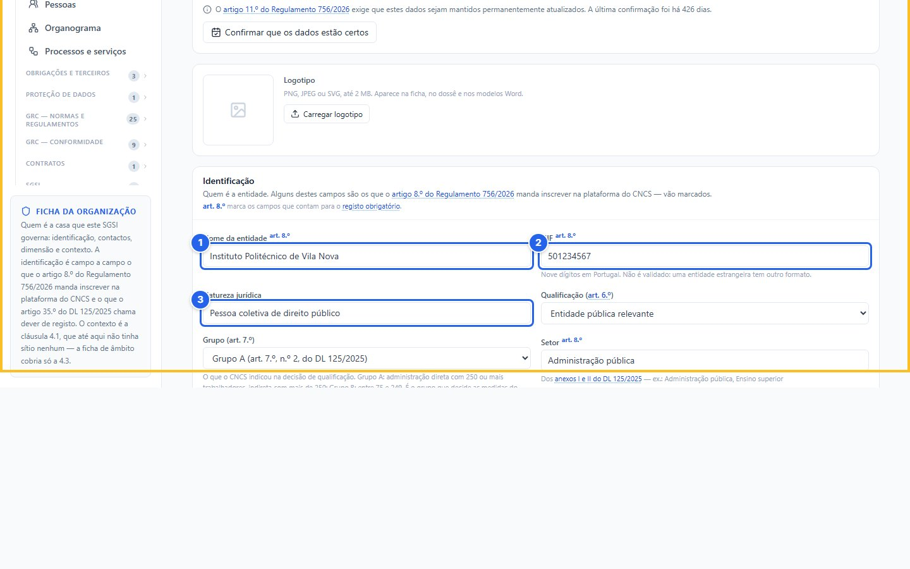
Identificação.
Nome
NIF
Natureza jurídica
A qualificação: entidade essencial, importante, pública relevante, ou ainda por qualificar. Escreve-se aqui a que o CNCS notificou na decisão final — nunca uma que a entidade presuma. Enquanto a decisão não chegar, fica por qualificar.
Numa entidade pública relevante aparece logo a seguir o grupo: A ou B, também como o CNCS o indicou. É o grupo que decide que medidas do Anexo IV se aplicam. O nosso politécnico, com mil duzentos e quarenta trabalhadores, é do Grupo A. Noutra qualificação, este campo nem aparece.
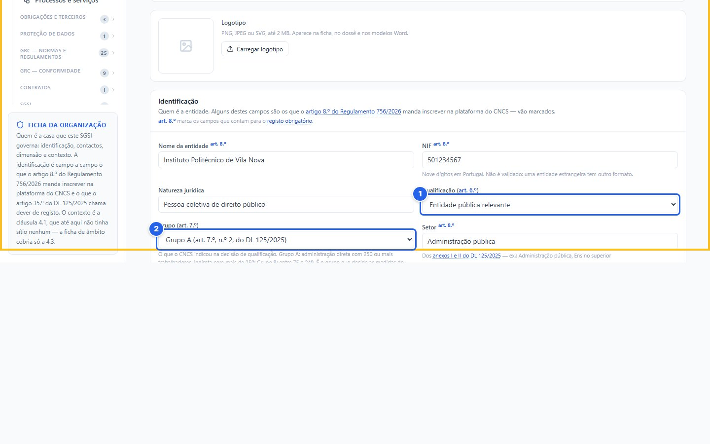
A qualificação e o grupo.
Qualificação (art. 6.º)
Grupo (art. 7.º)
O setor e o subsetor, como vêm nos anexos do decreto-lei: aqui, administração pública e ensino superior. As palavras sublinhadas na ajuda abrem o texto da lei sem sair da ficha.
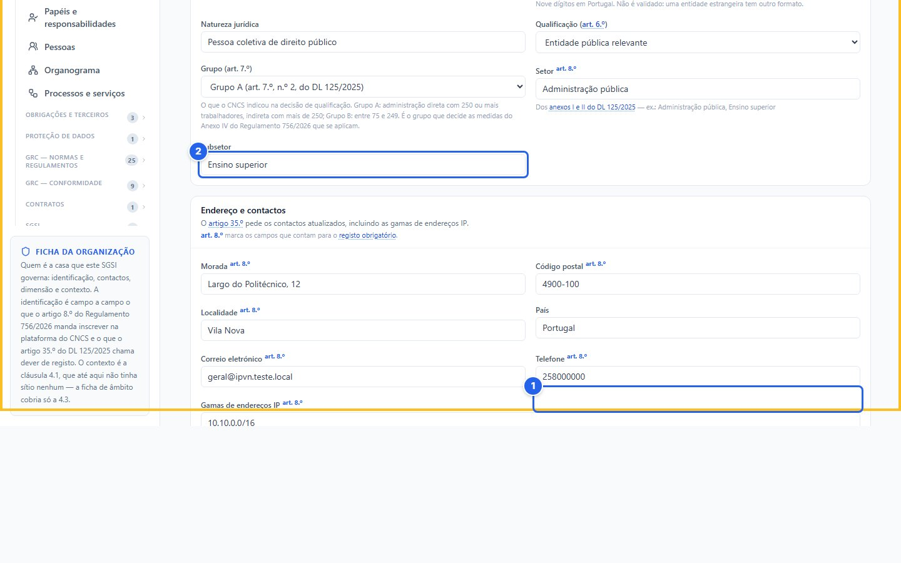
Setor e subsetor.
Setor (Anexos I e II)
Subsetor
Contactos
O endereço e os contactos: morada, código postal, localidade, país, correio eletrónico e telefone. Use contactos institucionais, que não dependam de uma pessoa: um endereço geral, não o de alguém que pode sair da organização.
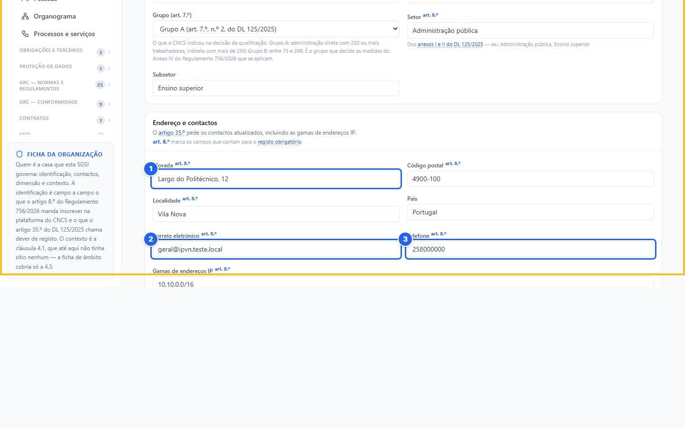
Endereço e contactos.
Morada
Correio eletrónico
Telefone
As gamas de endereços IP: os blocos de endereços que a organização usa na internet e na rede interna, um por linha. O artigo trigésimo quinto pede-as por escrito, para o registo.
Não é preciso escrevê-las de memória: o botão preencher a partir do inventário de redes vai buscá-las ao inventário, e acrescenta só as que faltam. Repare que só propõe — é preciso carregar em Guardar. Mais abaixo, os Estados-Membros onde a entidade presta serviços, se os houver.
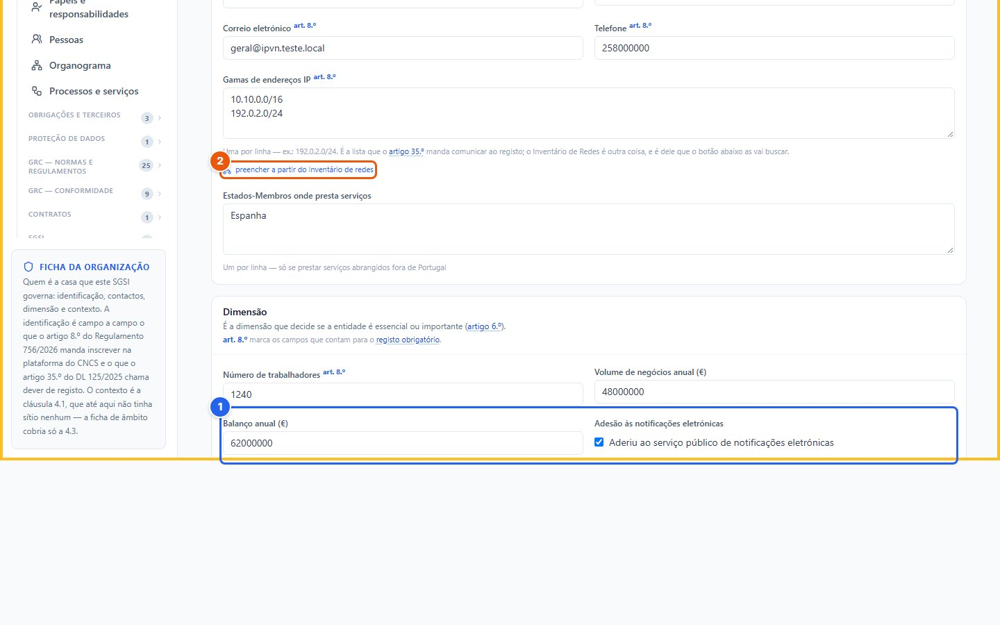
As gamas de endereços IP (1 de 2).
Gamas de endereços IP (art. 35.º)
Clique em preencher a partir do inventário de redes.
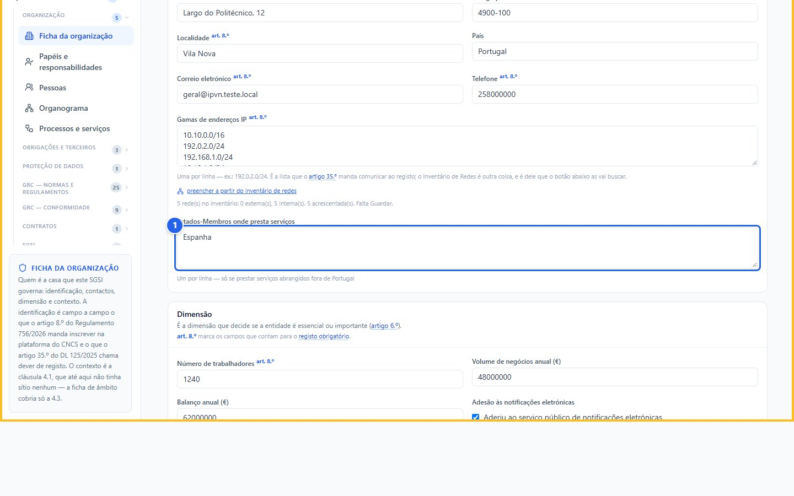
As gamas de endereços IP (2 de 2).
Estados-Membros
Dimensão
A dimensão: o número de trabalhadores, o volume de negócios anual e o balanço. Para uma empresa privada, é a dimensão que, com o setor, decide se é essencial ou importante. Para uma entidade pública, o número de trabalhadores decide o grupo.
E a adesão ao serviço público de notificações eletrónicas, que também se comunica na autoidentificação.
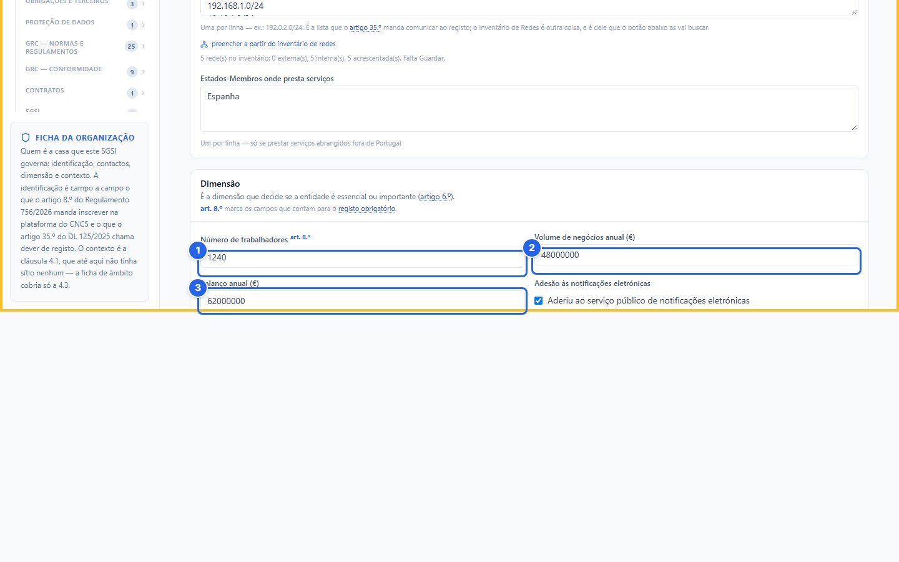
Dimensão.
Trabalhadores
Volume de negócios
Balanço anual
Contexto
Por fim, o contexto: missão, visão, estratégia, e as questões internas e externas que influenciam a segurança da informação. Internas, como a estrutura, os recursos e a cultura. Externas, como a lei, a tecnologia e o setor.
Na norma ISO 27001, é a cláusula 4.1, o contexto da organização. E serve depois na revisão pela gestão, onde a direção tem de olhar para o que mudou neste contexto — sem ter de o escrever de novo de memória.
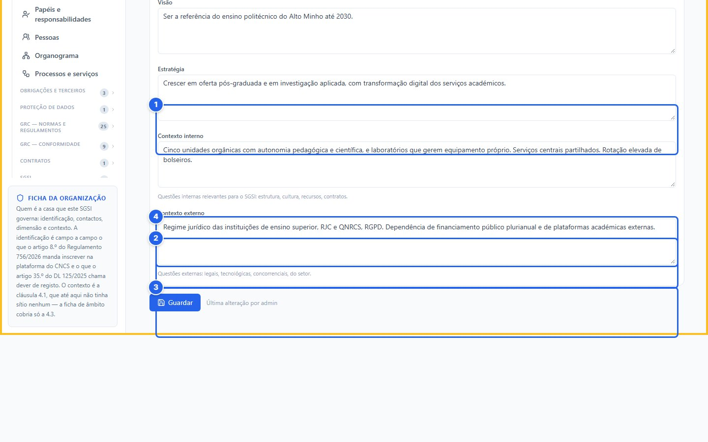
Missão, estratégia e contexto.
Missão
Estratégia
Contexto interno
Contexto externo
Manter atualizado
Revista a ficha, carregamos em Confirmar que os dados estão certos. Se houver alterações por gravar, o botão grava-as primeiro, e depois regista a data da confirmação.
Faça-o periodicamente — por exemplo, a cada trimestre — e sempre que algo mudar. Lembre-se: uma alteração aos dados do registo tem de chegar ao CNCS em trinta dias úteis.
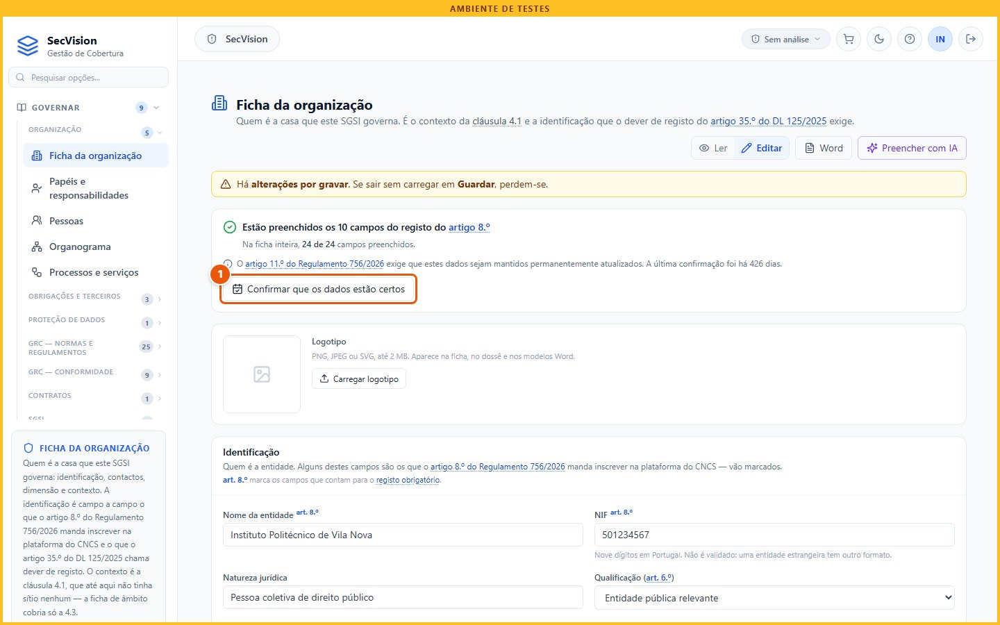
Confirmar que os dados estão certos (1 de 2).
Clique em Confirmar que os dados estão certos.
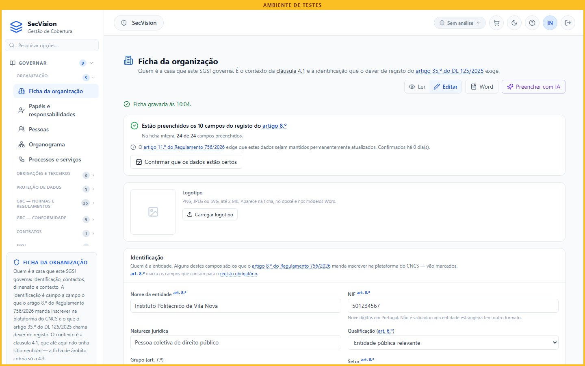
Confirmar que os dados estão certos (2 de 2).
O botão Word exporta a ficha para um documento, escolhendo os campos. É útil para levar a uma reunião, ou para reaproveitar noutro sistema de gestão.
Repare que as gamas de endereços IP não se exportam: estão trancadas, com a razão escrita. São o mapa da rede da organização, e um documento Word circula. Pedem-se para comunicar ao CNCS, não para andarem em anexos.
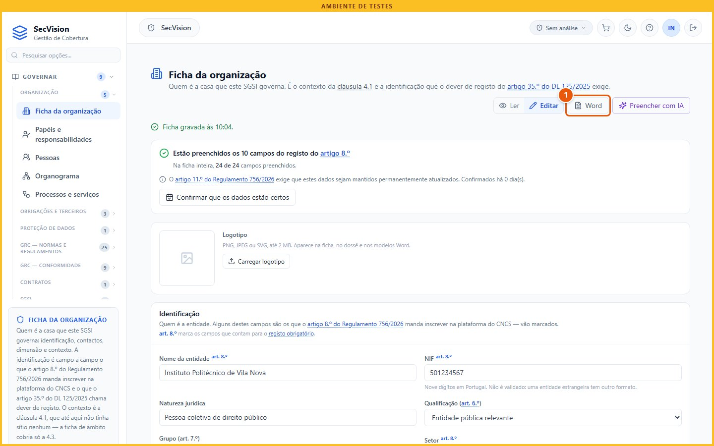
Exportar para Word (1 de 2).
Clique em Word.
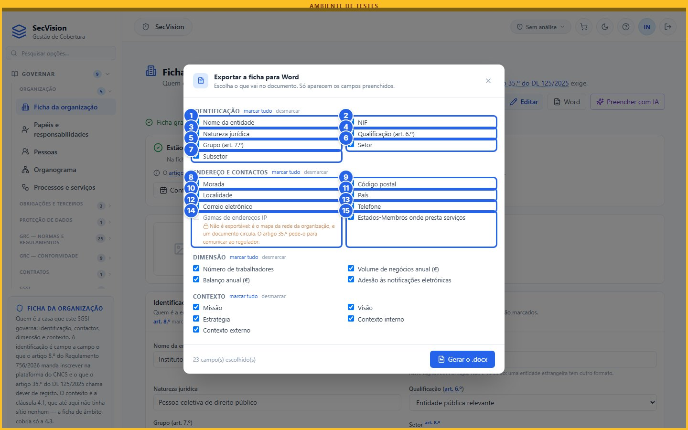
Exportar para Word (2 de 2).
Nome da entidade
NIF
Natureza jurídica
Qualificação (art. 6.º)
Grupo (art. 7.º)
Setor
Subsetor
Morada
Código postal
Localidade
País
Correio eletrónico
Telefone
Gamas de endereços IP
Estados-Membros onde presta serviços
Resumo
O que faz a plataforma com a ficha? Usa o nome e os contactos onde forem precisos — nos inquéritos a fornecedores, no dossier do auditor, nos documentos. E ensina ao anonimizador os dados da entidade, para os esconder sempre que alguém os escreva num pedido à inteligência artificial.
E o que não faz: não comunica nada ao CNCS. O registo e as alterações fazem-se na plataforma do CNCS. A ficha é onde a organização guarda os dados certos, para os entregar quando for preciso.
O que a plataforma faz com a ficha — e o que não faz
Usa o nome e os contactos nos inquéritos a fornecedores, no dossier do auditor e nos documentos.
Ensina ao anonimizador o nome, o NIF, a morada e as gamas IP, para os mascarar nos pedidos à IA.
Não comunica nada ao CNCS: o registo e as alterações fazem-se na plataforma do CNCS.